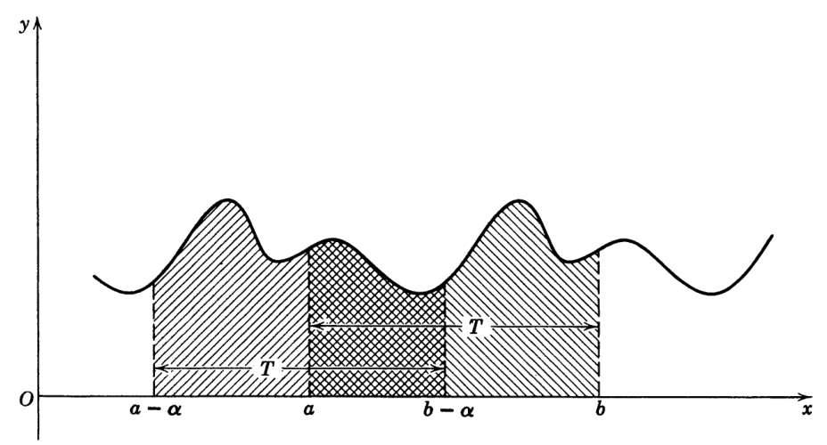
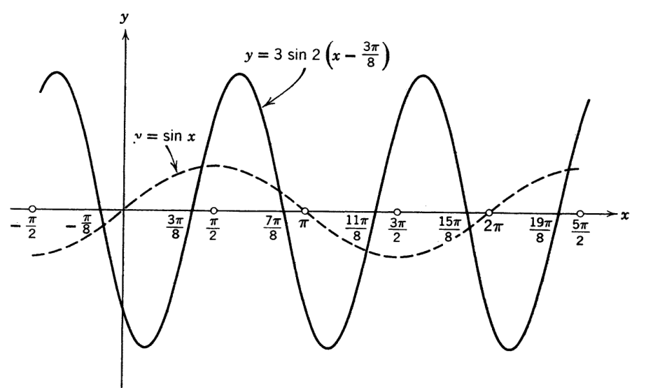

a. 一般说明。函数的周期延拓
函数 sinnx,cosnx 作为 x 的函数，有共同周期 2π。因此 (1) 型的任何有限和或收敛无穷和，也以 2π 为周期。现在补充第四章第 336 页对周期函数的一些一般性说明。
函数 f(x) 具有周期 T，是说对一切 x 都成立
f(x+T)=f(x).(2a)有周期 T 就意味着 ±T,±2T,…,±mT,… 也是周期，对一切整数 m 都有
f(x±mT)=f(x).(2b)特殊情况下，f(x) 还可能有更短的周期。例如 sin(4πx/T) 除了周期 T 还有较小的周期 T/2。
原注 1（第 572 页） 表示周期函数时，常可把自变量 x 看作圆周上的点，这比看作直线上的点更方便。对于周期 2π 的 f(x)，取单位圆，以任意初始半径和通往圆周上一动点的半径所夹的圆心角为 x。周期性意味着圆周上每一点只对应一个函数值，尽管角 x 本身只确定到相差 2π 的整数倍。
如第四章第 337 页所见，在闭区间 a≤x≤b 定义的函数，可以用周期 T=b−a 延拓至一切 x。在原区间外相邻的各个长度为 T 的区间上，逐段用周期关系定义
f(x+nT)=f(x),n=±1,±2,….(2c)在这些区间的接点 x=a+nT=b+(n−1)T 处，延拓函数的值未必唯一，也未必连续。因此必须容许函数在某些点 x=c 有跳跃间断，即在 c 两侧连续，但在 c 本身未必有定义或连续。
本章始终使用下列记号和关于 f(c) 的约定。以
f(c+0)=ϵ→0limf(c+ϵ2),(3a)f(c−0)=ϵ→0limf(c−ϵ2)(3b)分别表示在 c 的右极限与左极限。在间断点本身，约定取两极限的平均值，
f(c)=21[f(c+0)+f(c−0)],(4)不管 f(c) 原先取何值。这样，即使 f(a)=f(b)，也可以把原函数从闭区间周期延拓到全部实轴。只须留意跳跃点的函数值；特别地，若原来给定的端值 f(a),f(b) 不同，定义周期延拓时应以 21[f(a)+f(b)] 代替原来的两个端值。
b. 一个周期上的积分
周期函数在任意相邻的两个周期区间上的图形形状相同。这意味着，若 f 的周期为 T，则对任意 a，
∫−aT−af(x)dx=∫0Tf(x)dx.(5)也就是说，长度为 T 的一个周期区间无论放在哪里，积分值都相同。证明只需利用 f(ξ−T)=f(ξ)。代换 x=ξ−T，对任意 α,β 有
∫αβf(x)dx=∫α+Tβ+Tf(ξ)dξ=∫α+Tβ+Tf(x)dx.特别取 α=−a, β=0，得 ∫−a0f(x)dx=∫T−aTf(x)dx。因此
∫−aT−af(x)dx=∫−a0f(x)dx+∫0T−af(x)dx=∫T−aTf(x)dx+∫0T−af(x)dx=∫0Tf(x)dx.从积分的几何意义看，图 8.1 使这一结论一目了然。

图 8.1 一个完整周期上的积分
c. 简谐振动
我们将用最简单的周期函数构造极为一般的周期函数。这些简单函数就是 asinωx, acosωx，更一般地写成 asinω(x−ξ), acosω(x−ξ)，其中 a≥0, ω>0, ξ 均为常数。它们表示正弦振动或简谐振动。振动的周期为 T=2π/ω。称 ω 为圆频率或角频率。单位时间内的振动次数，即频率，为 1/T=ω/(2π)；ω 因此等于在 2π 个时间单位内振动的次数。a 称为振幅，即上述函数的最大值，因为正弦和余弦的最大值都是 1。ω(x−ξ) 称为相位，ωξ 称为相移。
原注 1（第 575 页） 只取两个公式中的任何一个，让 a,ξ 取遍各值，就已表示全部正弦振动。两式等价，因为 asinω(x−ξ)=acosω[x−(ξ+π/(2ω))]。
原注 2（第 575 页） 注意本书区分频率与圆频率。

图 8.2 正弦振动
要由正弦曲线作出 asinω(x−ξ) 的图像，只须将横向长度按 1:ω、纵向长度按 a:1 缩放，再向 x 轴正向平移 ξ（图 8.2）。
由三角加法公式，两种简谐振动又可分别写成 αcosωx+βsinωx 与 βcosωx−αsinωx，其中 α=−asinωξ, β=acosωξ。反之，任何 αcosωx+βsinωx 都表示一次正弦振动 asinω(x−ξ)，其振幅为 a=α2+β2，相移 ωξ 由上述两个关系确定。用这种写法立即可知，两个或多个角频率相同的振动之和又是同一角频率的振动。
前面已看到，用参数表示闭曲线时会出现周期函数。圆周运动引起的现象，例如与飞轮同步而反复发生的过程，自然可以用周期函数表示；它们也与一切振动现象相联系。
译者注 ξ 是图像横移的距离，ωξ 是由此引起的相位变化。若自变量为时间，前者以时间计，后者以弧度计。